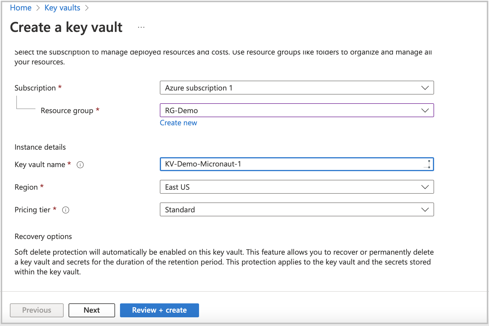
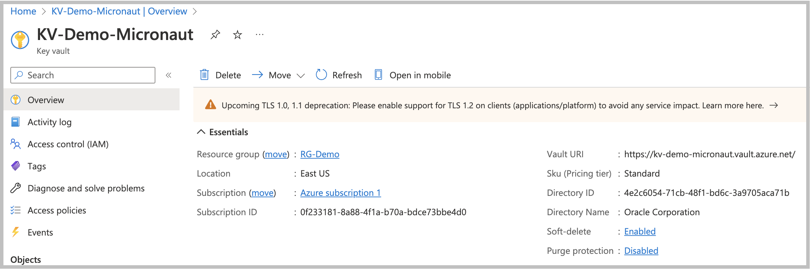
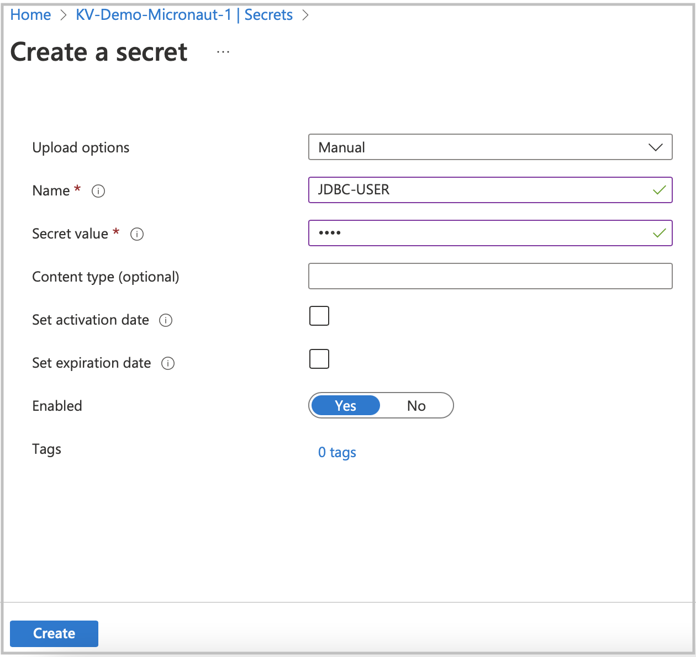
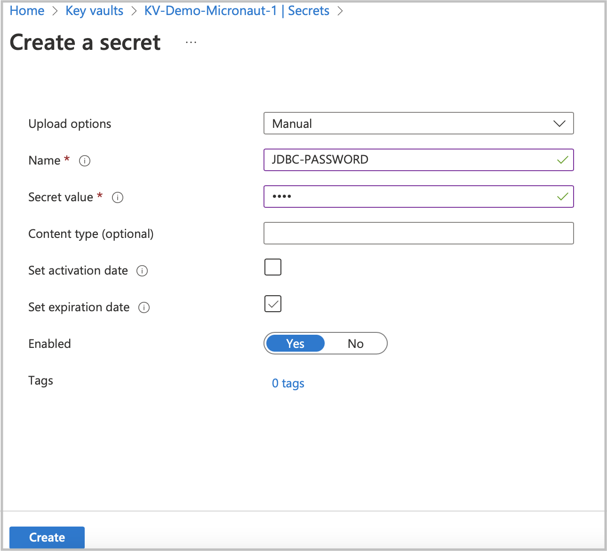
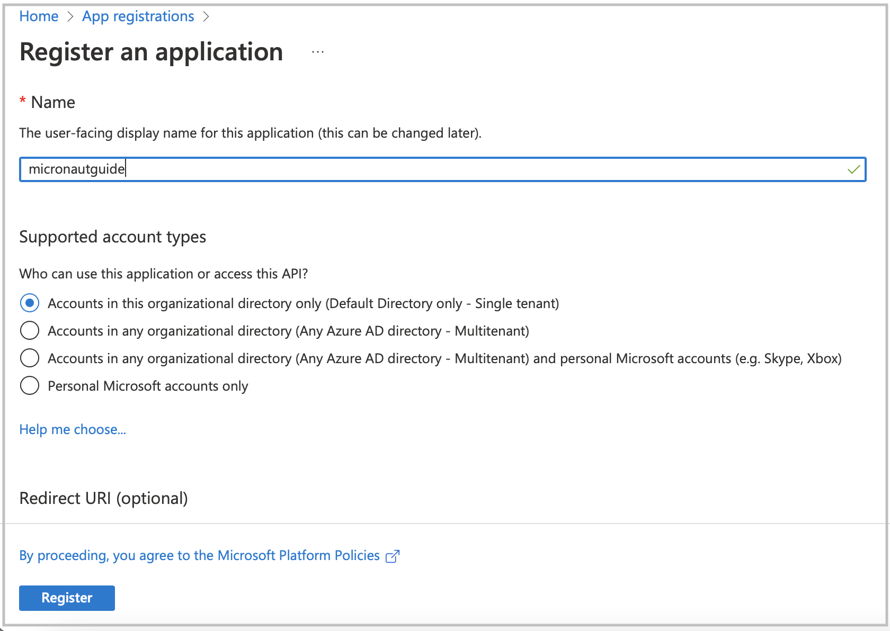
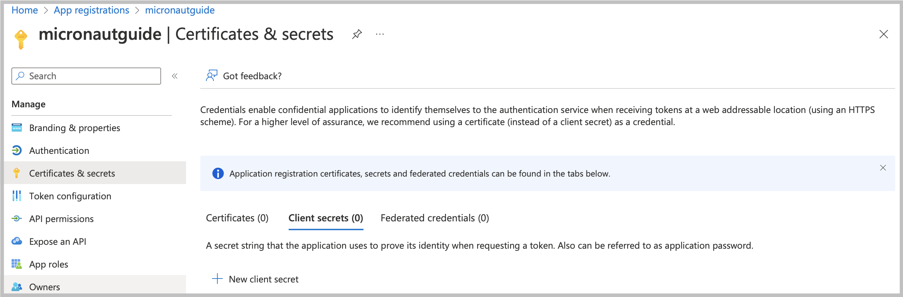
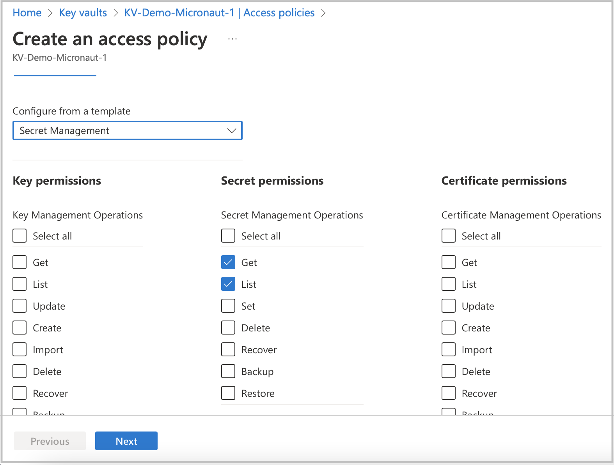
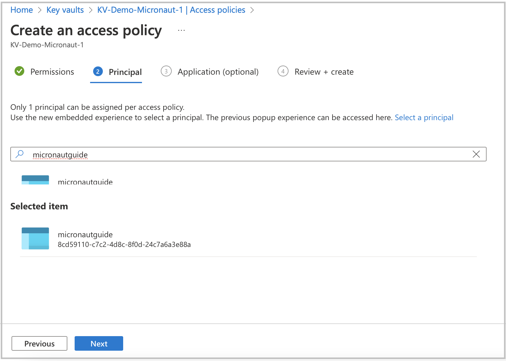

Securely store Micronaut application secrets in Azure Key Vault
Learn how to create secrets in Azure Key Vault and easily access them in a Micronaut application.
On this guide
In this section
Getting Started
In this guide, we will create a Micronaut application written in Kotlin.
What you will need
To complete this guide, you will need the following:
-
Some time on your hands
-
A decent text editor or IDE (e.g. IntelliJ IDEA)
-
JDK 21 or greater installed with
JAVA_HOMEconfigured appropriately -
A paid or free trial Microsoft Azure account (create an account at Azure account signup)
Creating the Application
Micronaut Azure Key Vault Dependencies
Add the following dependency:
implementation("io.micronaut.azure:micronaut-azure-secret-manager")Update the application configuration to use Azure Key Vault secrets
Add the Azure Key Vault secret placeholders to the application configuration
+ datasources.default.username: ${JDBC-USER}
+ datasources.default.password: ${JDBC-PASSWORD}
The Azure Key Vault secrets naming convention does not allow _ to be used as a word joiner. Therefore, when adding JDBC secret placeholders, you should use - instead, such as JDBC-USER and JDBC-PASSWORD.
|
Enable Distributed Configuration
Create a bootstrap.properties file in the resources directory to enable distributed configuration.
Add the following:
properties
<2> Set micronaut.config-client.enabled=true which is used to read and resolve configuration from distributed sources.
Clean up Application Configuration
If application.properties sets micronaut.application.name, remove it. You moved it to bootstrap.properties.
micronaut.application.name=micronautguideDisable Distributed Configuration for Test
You can disable distributed configuration in a test by annotating a test with:
@Property(name = "micronaut.config-client.enabled", value = StringUtils.FALSE)
@MicronautTestAzure Bootstrap Configuration
Add the following configuration for Azure bootstrap.properties:
| More details on how to obtain these values are provided in the Azure Portal section below. |
Clean up the application configuration
Remove the redundant application name entry from the application.properties.
- micronaut.application.name=micronautguideStore JDBC secrets in Azure Key Vault using Azure Portal
Create an Azure Key Vault service resource.

When the Key Vault service deployment is ready, go to the resource to create secrets. Before clicking the Secrets option in the left menu list, copy the Vault URI from the main screen section. You will need to set it as an environment variable to integrate Azure Key Vault into your application.

Create new secrets for the JDBC user and password. Click the Secrets option in the left menu, then click Generate/Import.


Go to App registration to register your application with the Microsoft identity platform. After registering your application,
copy the Application (client) ID and Directory (tenant) ID. You will use them later as environment variables to connect to Azure Key Vault.

Navigate to your application profile to generate application credentials that you will use to authenticate with the Azure Key Vault service. In the left menu, click Certificates & secrets. To generate the application credentials, click the Client secrets tab and then the New client secret button. Copy the secret value. You must set it along with the Application (client) ID, Directory (tenant) ID, and Vault URI as environment variables.
|
The client’s secret value cannot be viewed except immediately after creation. Be sure to save the secret before leaving the page.
|

To finish the Key Vault setup process, assign a policy to the Key Vault resource.
-
Go to your Key Vault resource profile.
-
Click the Access policies option in the left menu.
-
Select Get and List options from the Secret Management Operations list.
-
Finally, create an access policy.

Before completing the policy creation process, assign a security principal. The policy should refer to your application acting as a security principal.

Running the Application
With almost everything in place, you can start the application and try it out. First, set environment variables to configure the application data source, then start the application.
Create environment variables for AZURE_CLIENT_ID, AZURE_TENANT_ID, AZURE_SECRET_VALUE, and AZURE_VAULT_URI, which will be used in the Micronaut app’s application.properties data source:
export AZURE_CLIENT_ID=<the client id from the Azure configuration step>
export AZURE_TENANT_ID=<the tenant id from the Azure configuration step>
export AZURE_SECRET_VALUE=<the secret value from the Azure configuration step>
export AZURE_VAULT_URI=<the vault URI from the Azure configuration step>To run the application, use the ./gradlew run command, which starts the application on port 8080.
You can test the application in a web browser or with cURL.
Run from a terminal window to create a Genre:
curl -X "POST" "http://localhost:8080/genres" \
-H 'Content-Type: application/json; charset=utf-8' \
-d $'{ "name": "music" }'and run this to list the genres:
curl http://localhost:8080/genres/listCleaning Up
After you have finished this guide, you can clean up the resources you created on Azure Cloud so you won’t be billed for them in the future.
Next Steps
Explore more features with Micronaut Guides.
Read more about:
Help with the Micronaut Framework
The Micronaut Foundation sponsored the creation of this Guide. A variety of consulting and support services are available.
License
| All guides are released with an Apache License 2.0 for the code and a Creative Commons Attribution 4.0 license for the writing and media (images). |